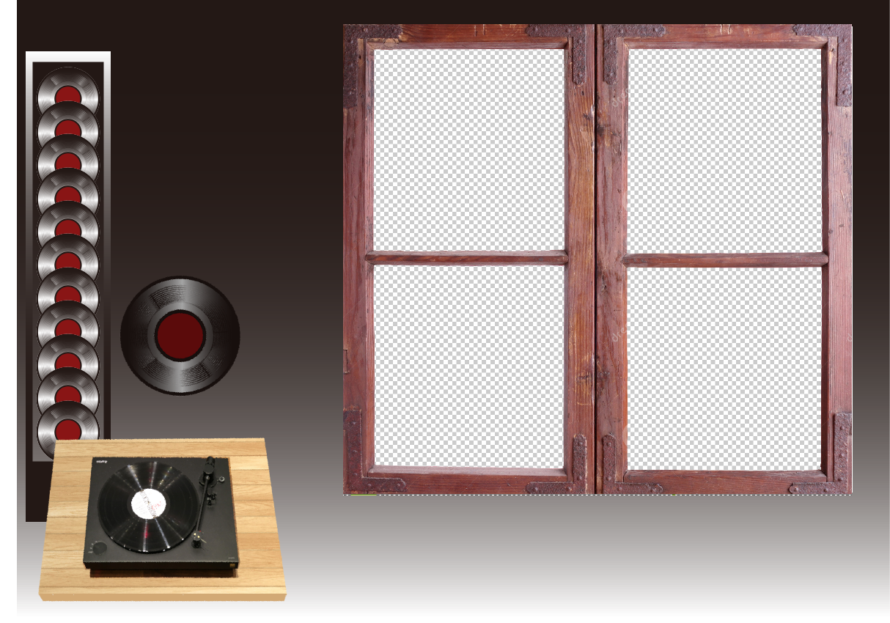

: LP 플레이어에 LP를 놓으면 방 안과 창 밖이 노래를 듣고 떠올린 이미지를 예제를 이용하여 만든 그래픽과 오브젝트들로 보여주는 방. 요소 튀지않는 색조의 간단한 방구조 일러스트 여러컬러의 LP판 음악선별 사용방법 음악 별 설명 간단스케치  현재 대략 모아놓은 플레이리스트 참고할 사이트 https://bl.ocks.org/mbostock https://threejs.org/examples/ http://paperjs.org/examples/ ...